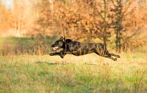

Johanna vom Hülser Bruch |
|
|---|---|
| Spezielle Jagdliche Leistungszucht | |
| DRC - ZB-Nr. | 1015308 |
| Geboren | 10. April 2010 |
| Mutter | Havanna vom Hülser Bruch |
| Vater | Mallorn's Diesel |
| Gesundheitsergebnisse | |
|---|---|
| HD | A2/ A2 |
| ED | frei |
| PRA-prcd-Test | über Erbgang nachge.: PRA-frei |
| CNM-Gentest: | frei |
| EIC-Gentest: | clear |
| Zwergenwuchs | N/N frei |
Judges Choice für Dyana´Lys irish Firefly

01.05.2016 in der schönen Oberpfalz konnte Fly überzeugen mit einem vorzüglich und 91/100Pkt. belegten wir den 2.Platz - A am Bavarian Lion´s Cup.. Hammer!! ((-: die Freude war bereits riesengroß... und konnte dann doch noch getoppt werden.. ((-: mit dem "Judges Choice" für Dyana´Lys irish Firefly...! Ich bin soooo mega stolz auf mein Glühwürmchen ((-: Vielen herzlichen Dank nochmal an die Richter Betty Schwieren, Stefano Martinoli, Stefania Gandolfi und Rainer Scesny für diese tolle Auszeichnung!!
Prüfungen |
|||
|---|---|---|---|
| 23.03.2014 | Langschleppe 800m | bestanden | Sehr Gut |
| 23.03.2014 | Langschleppe 800m | bestanden | Sehr Gut |
Workingtests |
|||
|---|---|---|---|
| 11.04.2015 | WT/F Lubbeek Belgien | Punkte nicht bekannt | 3. Platz |
| 11.04.2015 | WT/F Lubbeek Belgien | Punkte nicht bekannt | 3. Platz |